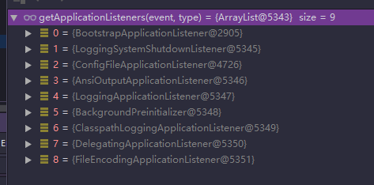
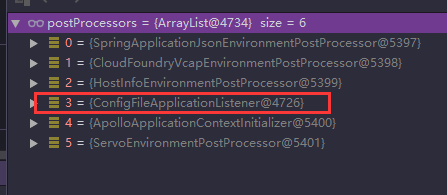
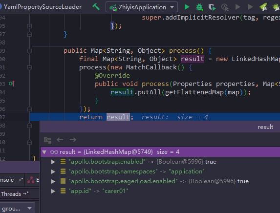

refreshContext方法，SpringBoot的主要运行步骤，基本都包含在这个方法里了，而这个方法就是我们运行Springboot的主函数SpringApplication.run(Application.class, args);经过几步后到达的 public ConfigurableApplicationContext run(String... args) {
StopWatch stopWatch = new StopWatch();
stopWatch.start();
ConfigurableApplicationContext context = null;
FailureAnalyzers analyzers = null;
configureHeadlessProperty();
SpringApplicationRunListeners listeners = getRunListeners(args);
listeners.starting();
try {
ApplicationArguments applicationArguments = new DefaultApplicationArguments(
args);
ConfigurableEnvironment environment = prepareEnvironment(listeners,
applicationArguments);
Banner printedBanner = printBanner(environment);
context = createApplicationContext();
analyzers = new FailureAnalyzers(context);
prepareContext(context, environment, listeners, applicationArguments,
printedBanner);
refreshContext(context);
afterRefresh(context, applicationArguments);
listeners.finished(context, null);
stopWatch.stop();
if (this.logStartupInfo) {
new StartupInfoLogger(this.mainApplicationClass)
.logStarted(getApplicationLog(), stopWatch);
}
return context;
}
catch (Throwable ex) {
handleRunFailure(context, listeners, analyzers, ex);
throw new IllegalStateException(ex);
}
}ConfigurableEnvironment environment = prepareEnvironment(listeners, applicationArguments);这一步，我们继续深入 private ConfigurableEnvironment prepareEnvironment(
SpringApplicationRunListeners listeners,
ApplicationArguments applicationArguments) {
// Create and configure the environment
ConfigurableEnvironment environment = getOrCreateEnvironment();
configureEnvironment(environment, applicationArguments.getSourceArgs());
//主要是这步
listeners.environmentPrepared(environment);
if (!this.webEnvironment) {
environment = new EnvironmentConverter(getClassLoader())
.convertToStandardEnvironmentIfNecessary(environment);
}
return environment;
}listeners.environmentPrepared(environment);通过监听器来进行环境变量的初始化，同时读取配置也是一部分工作listeners中，默认只有一个EventPublishRunListener public void environmentPrepared(ConfigurableEnvironment environment) {
for (SpringApplicationRunListener listener : this.listeners) {
listener.environmentPrepared(environment);
}
} @Override
public void environmentPrepared(ConfigurableEnvironment environment) {
this.initialMulticaster.multicastEvent(new ApplicationEnvironmentPreparedEvent(
this.application, this.args, environment));
} @Override
public void multicastEvent(ApplicationEvent event) {
multicastEvent(event, resolveDefaultEventType(event));
}继续，重点是invokeListener方法，去调用监听器事件，可以想象对配置文件来讲，这就是读取配置事件了。同时监听器有很多，读取配置文件的监听器是ConfigFileAplicationListener，看名字还是蛮明显的吧

@Override
public void multicastEvent(final ApplicationEvent event, ResolvableType eventType) {
ResolvableType type = (eventType != null ? eventType : resolveDefaultEventType(event));
for (final ApplicationListener<?> listener : getApplicationListeners(event, type)) {
Executor executor = getTaskExecutor();
if (executor != null) {
executor.execute(new Runnable() {
@Override
public void run() {
invokeListener(listener, event);
}
});
}
else {
//重点
invokeListener(listener, event);
}
}
}继续，和上一步类似，do真正的事件了
protected void invokeListener(ApplicationListener<?> listener, ApplicationEvent event) {
ErrorHandler errorHandler = getErrorHandler();
if (errorHandler != null) {
try {
doInvokeListener(listener, event);
}
catch (Throwable err) {
errorHandler.handleError(err);
}
}
else {
//重点
doInvokeListener(listener, event);
}
} private void doInvokeListener(ApplicationListener listener, ApplicationEvent event) {
try {
// 入口
listener.onApplicationEvent(event);
}
catch (ClassCastException ex) {
String msg = ex.getMessage();
if (msg == null || matchesClassCastMessage(msg, event.getClass())) {
// Possibly a lambda-defined listener which we could not resolve the generic event type for
// -> let's suppress the exception and just log a debug message.
Log logger = LogFactory.getLog(getClass());
if (logger.isDebugEnabled()) {
logger.debug("Non-matching event type for listener: " + listener, ex);
}
}
else {
throw ex;
}
}
}ConfigFileApplicationListener类中继续 @Override
public void onApplicationEvent(ApplicationEvent event) {
if (event instanceof ApplicationEnvironmentPreparedEvent) {
//配置入口
onApplicationEnvironmentPreparedEvent(
(ApplicationEnvironmentPreparedEvent) event);
}
if (event instanceof ApplicationPreparedEvent) {
onApplicationPreparedEvent(event);
}
}继续，可以看到处理器有这些，我们关注ConfigFileApplicationListener

private void onApplicationEnvironmentPreparedEvent(
ApplicationEnvironmentPreparedEvent event) {
List<EnvironmentPostProcessor> postProcessors = loadPostProcessors();
postProcessors.add(this);
AnnotationAwareOrderComparator.sort(postProcessors);
for (EnvironmentPostProcessor postProcessor : postProcessors) {
//入口
postProcessor.postProcessEnvironment(event.getEnvironment(),
event.getSpringApplication());
}
} @Override
public void postProcessEnvironment(ConfigurableEnvironment environment,
SpringApplication application) {
//重点入口
addPropertySources(environment, application.getResourceLoader());
configureIgnoreBeanInfo(environment);
bindToSpringApplication(environment, application);
}继续
protected void addPropertySources(ConfigurableEnvironment environment,
ResourceLoader resourceLoader) {
RandomValuePropertySource.addToEnvironment(environment);
//总算看到加载入口了
new Loader(environment, resourceLoader).load();
}public void load() {
this.propertiesLoader = new PropertySourcesLoader();
this.activatedProfiles = false;
this.profiles = Collections.asLifoQueue(new LinkedList<Profile>());
this.processedProfiles = new LinkedList<Profile>();
// Pre-existing active profiles set via Environment.setActiveProfiles()
// are additional profiles and config files are allowed to add more if
// they want to, so don't call addActiveProfiles() here.
Set<Profile> initialActiveProfiles = initializeActiveProfiles();
this.profiles.addAll(getUnprocessedActiveProfiles(initialActiveProfiles));
if (this.profiles.isEmpty()) {
for (String defaultProfileName : this.environment.getDefaultProfiles()) {
Profile defaultProfile = new Profile(defaultProfileName, true);
if (!this.profiles.contains(defaultProfile)) {
this.profiles.add(defaultProfile);
}
}
}
// The default profile for these purposes is represented as null. We add it
// last so that it is first out of the queue (active profiles will then
// override any settings in the defaults when the list is reversed later).
this.profiles.add(null);
while (!this.profiles.isEmpty()) {
Profile profile = this.profiles.poll();
for (String location : getSearchLocations()) {
if (!location.endsWith("/")) {
// location is a filename already, so don't search for more
// filenames
load(location, null, profile);
}
else {
for (String name : getSearchNames()) {
//加载入口
load(location, name, profile);
}
}
}
this.processedProfiles.add(profile);
}
addConfigurationProperties(this.propertiesLoader.getPropertySources());
}getSearchNames获取，那就看看这个方法 private Set<String> getSearchNames() {
if (this.environment.containsProperty(CONFIG_NAME_PROPERTY)) {
return asResolvedSet(this.environment.getProperty(CONFIG_NAME_PROPERTY),
null);
}
return asResolvedSet(ConfigFileApplicationListener.this.names, DEFAULT_NAMES);
}CONFIG_NAME_PROPERTY值为spring.config.name，DEFAULT_NAMES值为application，所以可以看出application这个名字就是默认的配置名了，但也可以用spring.config.name属性来修改其实到这一步，后面已经没难度了，可以想象，接下去应该是拼接出完整的路径，找到文件读取，还是走完流程把
继续
private void load(String location, String name, Profile profile) {
String group = "profile=" + ((profile != null) ? profile : "");
if (!StringUtils.hasText(name)) {
// Try to load directly from the location
loadIntoGroup(group, location, profile);
}
else {
// Search for a file with the given name
for (String ext : this.propertiesLoader.getAllFileExtensions()) {
if (profile != null) {
// Try the profile-specific file
loadIntoGroup(group, location + name + "-" + profile + "." + ext,
null);
for (Profile processedProfile : this.processedProfiles) {
if (processedProfile != null) {
loadIntoGroup(group, location + name + "-"
+ processedProfile + "." + ext, profile);
}
}
// Sometimes people put "spring.profiles: dev" in
// application-dev.yml (gh-340). Arguably we should try and error
// out on that, but we can be kind and load it anyway.
loadIntoGroup(group, location + name + "-" + profile + "." + ext,
profile);
}
// Also try the profile-specific section (if any) of the normal file
//加载重点
loadIntoGroup(group, location + name + "." + ext, profile);
}
}
} private PropertySource<?> loadIntoGroup(String identifier, String location,
Profile profile) {
try {
//入口
return doLoadIntoGroup(identifier, location, profile);
}
catch (Exception ex) {
throw new IllegalStateException(
"Failed to load property source from location '" + location + "'",
ex);
}
} private PropertySource<?> doLoadIntoGroup(String identifier, String location,
Profile profile) throws IOException {
Resource resource = this.resourceLoader.getResource(location);
PropertySource<?> propertySource = null;
StringBuilder msg = new StringBuilder();
if (resource != null && resource.exists()) {
String name = "applicationConfig: [" + location + "]";
String group = "applicationConfig: [" + identifier + "]";
// 加载入口
propertySource = this.propertiesLoader.load(resource, group, name,
(profile != null) ? profile.getName() : null);
if (propertySource != null) {
msg.append("Loaded ");
handleProfileProperties(propertySource);
}
else {
msg.append("Skipped (empty) ");
}
}
else {
msg.append("Skipped ");
}
msg.append("config file ");
msg.append(getResourceDescription(location, resource));
if (profile != null) {
msg.append(" for profile ").append(profile);
}
if (resource == null || !resource.exists()) {
msg.append(" resource not found");
this.logger.trace(msg);
}
else {
this.logger.debug(msg);
}
return propertySource;
}yml结尾的文件肯定用YamlPropertySourceLoader才能加载，properties结尾的用另一个 public PropertySource<?> load(Resource resource, String group, String name,
String profile) throws IOException {
if (isFile(resource)) {
String sourceName = generatePropertySourceName(name, profile);
for (PropertySourceLoader loader : this.loaders) {
if (canLoadFileExtension(loader, resource)) {
// 干事的入口
PropertySource<?> specific = loader.load(sourceName, resource,
profile);
addPropertySource(group, specific);
return specific;
}
}
}
return null;
}yml，所以在YamlPropertySourceLoader类 @Override
public PropertySource<?> load(String name, Resource resource, String profile)
throws IOException {
if (ClassUtils.isPresent("org.yaml.snakeyaml.Yaml", null)) {
Processor processor = new Processor(resource, profile);
//真正的处理类
Map<String, Object> source = processor.process();
if (!source.isEmpty()) {
return new MapPropertySource(name, source);
}
}
return null;
} public Map<String, Object> process() {
final Map<String, Object> result = new LinkedHashMap<String, Object>();
//接近了
process(new MatchCallback() {
@Override
public void process(Properties properties, Map<String, Object> map) {
result.putAll(getFlattenedMap(map));
}
});
return result;
} protected void process(MatchCallback callback) {
Yaml yaml = createYaml();
for (Resource resource : this.resources) {
//更近了
boolean found = process(callback, yaml, resource);
if (this.resolutionMethod == ResolutionMethod.FIRST_FOUND && found) {
return;
}
}
}callback private boolean process(MatchCallback callback, Yaml yaml, Resource resource) {
int count = 0;
try {
if (logger.isDebugEnabled()) {
logger.debug("Loading from YAML: " + resource);
}
//读取文件
Reader reader = new UnicodeReader(resource.getInputStream());
try {
for (Object object : yaml.loadAll(reader)) {
//总算拿到了
if (object != null && process(asMap(object), callback)) {
count++;
if (this.resolutionMethod == ResolutionMethod.FIRST_FOUND) {
break;
}
}
}
if (logger.isDebugEnabled()) {
logger.debug("Loaded " + count + " document" + (count > 1 ? "s" : "") +
" from YAML resource: " + resource);
}
}
finally {
reader.close();
}
}
catch (IOException ex) {
handleProcessError(resource, ex);
}
return (count > 0);
}result
MapPropertySource属性资源，在之后就会被用上了SpringBoot读取application.yml的整个流程，代码虽然贴的比较多，但可以让初学者也可以跟着这个步骤完整的理解一遍，代码中的关键步骤我都用中文标明了，其它没标注部分不是这章的重点，想研究的自行研究